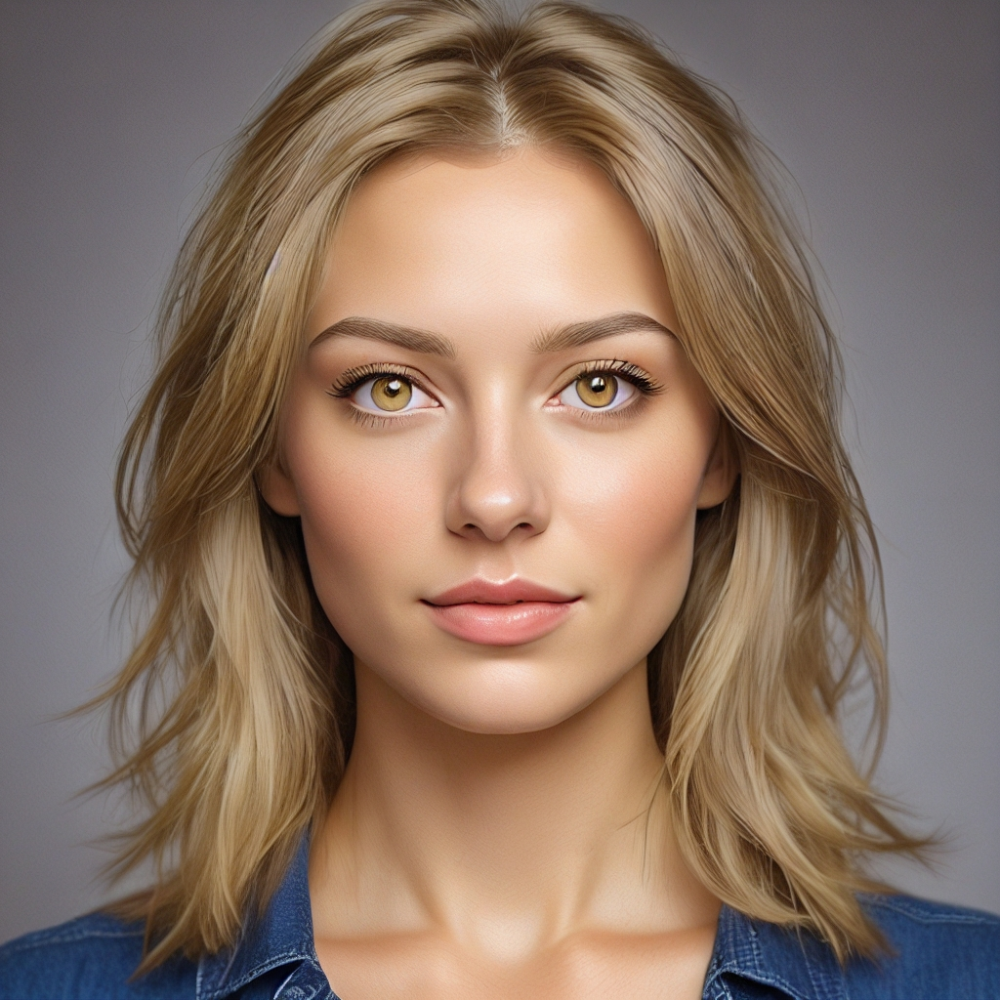

Tipy pro úpravy s vedením obrázkem
Funkce úpravy s vedením obrázkem v AiCasso vám umožňuje provádět změny na obrázku jen tím, že popíšete, co chcete. Ať už chcete změnit styl, upravit náladu nebo doladit určité části, AiCasso to za vás zvládne, aniž byste museli ručně vybírat nebo malovat cokoliv.
Jak to funguje:
Popište svou změnu:
Jednoduše napište, co chcete změnit, a AiCasso tyto změny na obrázku aplikuje.
Příklady úprav:
Příklad 1: "Udělej ji blondýnku."

Výsledek: AiCasso změní barvu vlasů osoby na blond.
Příklad 2: "Udělej to v noci, použij 50 kroků, měřítko vedení 1 a měřítko vedení obrázku 1."
Výsledek: Obrázek bude transformován na noční scénu se specifickými úpravami na základě detailů, které jste poskytli.
Další možnosti
Můžete jemně doladit své úpravy pomocí těchto volitelných nastavení:
- Měřítko vedení obrázku: Toto ovládá, jak blízko se nový obrázek drží originálu. Nižší hodnota znamená, že změny jsou subtilnější, zatímco vyšší hodnota je činí výraznějšími. Můžete to nastavit mezi 1 a 8.
- Kroky: Toto nastavuje, kolik vylepšení nástroj provede. Více kroků znamená hladší a podrobnější konečný obrázek. Můžete si vybrat mezi 1 a 50 kroky, přičemž 20 je výchozí.
- Měřítko vedení: Toto ovlivňuje, jak blízko AI následuje váš popis. Nižší měřítko dává AI více tvůrčí svobody, zatímco vyšší měřítko ji nutí držet se toho, co jste řekli. Můžete to upravit mezi 1 a 20.